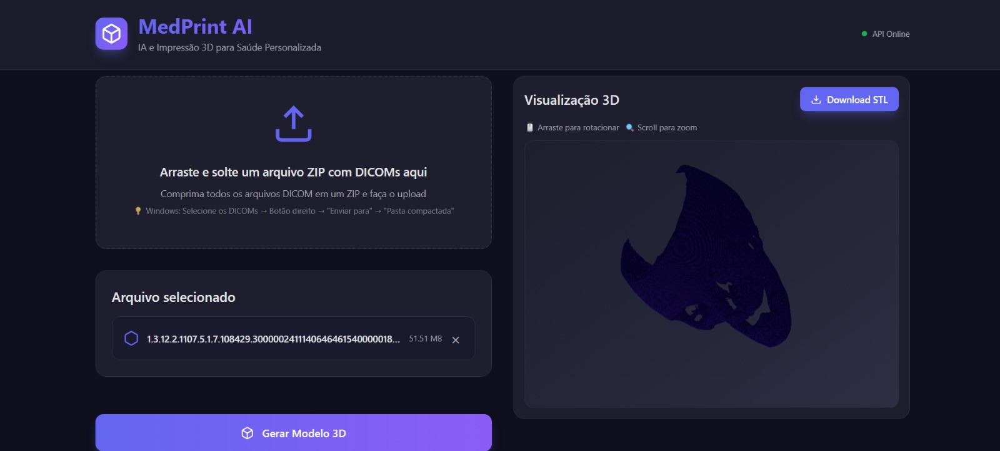
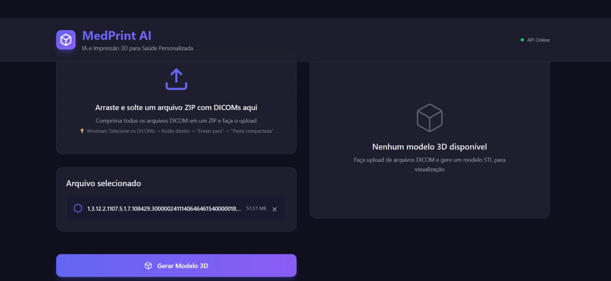

Psicologia & Tecnologia
Tecnologia que cuida de gente.
Ciência que vira cuidado real.
A Psitec nasce da união de dois olhares — o cuidado da Psicologia e a precisão da Tecnologia — para transformar dados em decisões melhores na saúde. Nosso principal produto, o MedPrintAI, usa Inteligência Artificial e Impressão 3D para gerar modelos anatômicos personalizados a partir de exames de imagem, em horas, não em dias.
¹ Literatura clínica: redução de até 62 min de tempo de sala cirúrgica com uso de biomodelos.

Produto principal da Psitec
MedPrintAI: da tomografia ao modelo 3D, em horas
O MedPrintAI converte exames DICOM, NIfTI e CT em modelos 3D digitais (STL/GLB) para planejamento cirúrgico, com Inteligência Artificial treinada para preservar a fidelidade anatômica. O cirurgião envia o exame, recebe o modelo pronto e imprime onde e como quiser — sem licenças caras, sem depender de segmentação manual e sem esperar dias por um bureau de biomodelagem.
Software gratuito
R$ 0
3D Slicer, InVesalius, ITK-SNAP. O cirurgião segmenta manualmente a própria imagem.
- Consome o tempo do cirurgião
- Risco de pseudoanatomia (artefatos, formas fantasma)
- Exige curva de aprendizado técnica
Bureaus tradicionais
R$ 990 – R$ 9.000+
Empresas que recebem o DICOM e entregam a peça física impressa.
- Preço opaco, "sob consulta"
- Prazo típico de 3 a 7 dias úteis
- Processo manual, pouco escalável
IA + impressão 3D
A partir de R$ 290 por caso
Modelo 3D digital gerado por IA, com preço transparente e entrega em horas.
- Fidelidade clínica validada, sem pseudoanatomia
- Entrega em horas, não em dias
- Sem CapEx: nenhuma licença ou impressora própria necessária

Veja o MedPrintAI transformando um exame de imagem em modelo 3D navegável.
Fluxo do produto
Como funciona
Um pipeline automatizado, do exame bruto ao arquivo pronto para impressão.
Envie o exame
Upload de arquivos DICOM, NIfTI ou ZIP. Arquivos individuais são compactados automaticamente.
IA segmenta a anatomia
Algoritmos de segmentação (threshold ou IA) identificam estruturas ósseas e anatômicas relevantes por Hounsfield Units, com suavização gaussiana configurável.
Modelo 3D é gerado
Reconstrução volumétrica em malha, com controle de qualidade: número de faces, vértices, dimensões e verificação de watertight.
Baixe e imprima
Exporte em STL ou GLB, visualize em 3D com rotação e zoom, e imprima onde quiser — impressora própria ou bureau parceiro.
Ficha técnica
Especificações do MedPrintAI
Entradas suportadas
DICOM, NIfTI (.nii/.nii.gz) e ZIP com séries completas de TC/RM
Segmentação
Threshold por Hounsfield Units (HU) configurável + segmentação por IA (beta), com suavização gaussiana
Saídas
Malha 3D em STL e GLB, com preview ajustável (até ~150 mil faces / 100% de resolução)
Controle de qualidade
Métricas de faces, vértices, dimensões do volume (voxels) e verificação de integridade (watertight)
Visualização
Viewer 3D no navegador com wireframe, grid, câmeras predefinidas (frente, topo, isométrica etc.) e tela cheia
Gestão de processos
Dashboard com histórico de processamentos, taxa de sucesso e busca por arquivo
Tecnologias centrais
Inteligência Artificial, Machine Learning e Biomateriais biocompatíveis para a etapa de impressão física
Maturidade
TRL 3 · pedido de patente em andamento · titularidade UFPI, via NINTEC
Para quem é
Feito para o cirurgião que não pode esperar
O MedPrintAI foi desenhado para o cirurgião de maxilo, neuro e ortopedia — autônomo ou em consultório — que hoje escolhe entre segmentar manualmente em software gratuito ou esperar dias por um bureau de preço opaco. Com modelos anatômicos precisos em mãos antes da cirurgia, é possível pré-dobrar placas de fixação, ensaiar osteotomias, produzir guias cirúrgicos e alinhar a equipe — reduzindo riscos intraoperatórios e acelerando a recuperação do paciente.
Posicionamento de mercado
O espaço que ninguém ocupa no Brasil, hoje
O mercado brasileiro de biomodelagem é bimodal: de um lado, o "faça você mesmo" gratuito e arriscado; do outro, bureaus físicos entre R$ 990 e mais de R$ 9.000, com prazo de dias. O MedPrintAI ocupa a lacuna entre os dois — rápido, confiável e com preço por caso.
| Referência de mercado | Entrega | Preço |
|---|---|---|
| Software gratuito (3D Slicer, InVesalius) | Arquivo digital — segmentação manual | R$ 0 |
| Planejamento digital odontológico | Arquivo STL, sem peça física | R$ 80 – R$ 380 |
| Biomodelo físico (bureau nacional) | Peça impressa, entrega em 3–7 dias úteis | R$ 990+ |
| Biomodelo terceirizado (benchmark internacional) | Peça impressa pronta | ~R$ 9.000 |
| MedPrintAI | Modelo 3D digital (STL/GLB) gerado por IA, em horas | R$ 290 |
Valores de referência com base em levantamento de mercado interno (2026) e literatura clínica; sujeitos a revisão.
Nosso foco principal
Tecnologia
A Psitec é uma empresa de base tecnológica com raízes acadêmicas: nasce como spin-off ligado à Universidade Federal do Piauí (UFPI), com apoio do Núcleo de Inovação Tecnológica (NINTEC-UFPI). Aplicamos Inteligência Artificial, Aprendizado de Máquina e engenharia de software para transformar pesquisa em produtos reais — com o MedPrintAI como nossa vitrine tecnológica.
- Inteligência Artificial aplicada à saúde e à imagem médica
- Desenvolvimento de plataformas e produtos digitais sob medida
- Pesquisa aplicada, prototipagem e validação clínica
- Parcerias com instituições de ensino e saúde para inovação aberta
Nossa origem
Psicologia
Antes da tecnologia, veio o cuidado. A Psitec também atua na área de Psicologia, oferecendo escuta qualificada e suporte para pessoas e organizações. É esse olhar humano que orienta como desenhamos cada produto tecnológico: pensando em quem vai usar, e em quem será impactado por ele — do paciente ao profissional de saúde.
- Atendimento psicológico individual
- Avaliação e acompanhamento psicológico
- Consultoria em saúde mental para equipes e organizações
Karine Cardozo Rodrigues Machado
Psicóloga responsávelConduz a área de Psicologia da Psitec, garantindo o cuidado e a qualidade técnica de cada atendimento.
Quem constrói
Equipe
Pesquisa aplicada, do laboratório ao produto.
Vinicius Ponte Machado
Fundador & CoordenadorDoutor em Engenharia Elétrica e de Computação (UFRN) e Mestre em Informática Aplicada (UNIFOR). Professor do Departamento de Computação da UFPI, com experiência em Inteligência Artificial aplicada à saúde e coordenação de projetos de inovação.
Currículo Lattes ↗Karine Cardozo Rodrigues Machado
Sócia administradoraResponsável pela gestão administrativa da Psitec e pela área de Psicologia da empresa, atuando como psicóloga responsável pelos atendimentos.
Luis Felipe Cabral Brito
IA & Segmentação de ImagensDesenvolvimento dos algoritmos de segmentação e classificação de imagens médicas, modelagem e treinamento dos modelos preditivos.
Currículo Lattes ↗Luiz Henrique Mesquita de Aquino
Integração IA + Impressão 3DIntegração dos módulos de IA com o pipeline de impressão 3D, automatizando a geração de arquivos prontos para impressão.
Currículo Lattes ↗Ramon Matheus da Silva Fernandes
Interface & Experiência do UsuárioResponsável pela interface de usuário e usabilidade da plataforma, testes com usuários e documentação funcional.
Currículo Lattes ↗Fale com a gente
Vamos conversar sobre o seu caso
Quer testar o MedPrintAI, conhecer os serviços de Psicologia ou propor uma parceria? Preencha o formulário ou entre em contato diretamente.